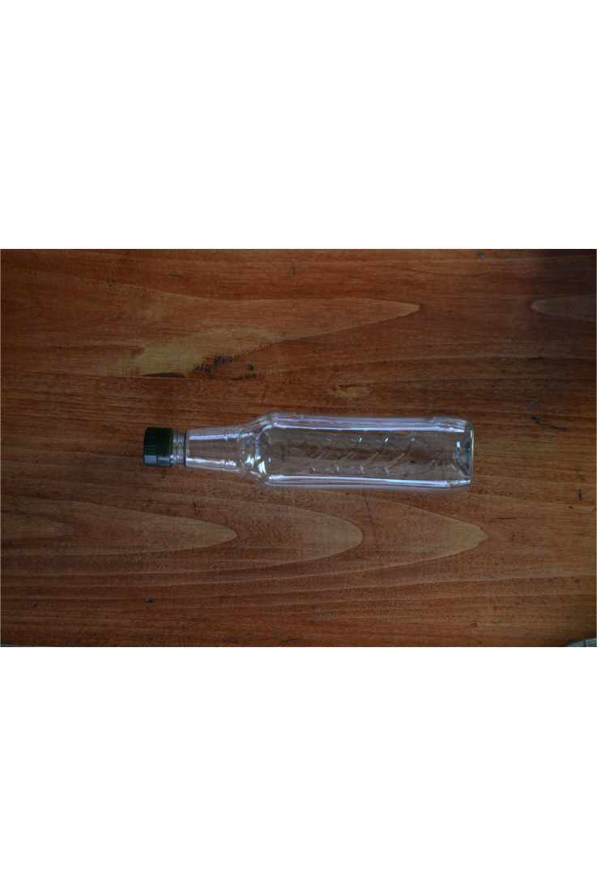
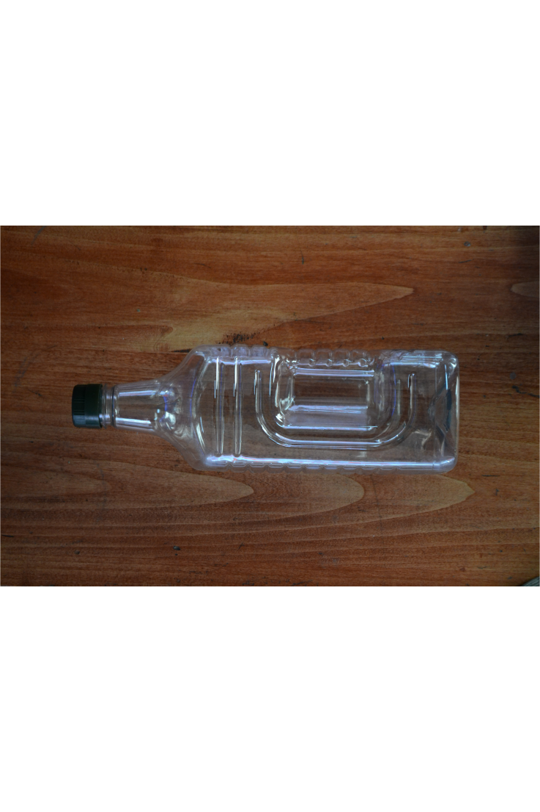

Información sobre los aceites
¿Cómo maridar nuestros Aceites?
Aceite de Oliva
El aceite de oliva, especialmente el extra virgen, tiene un sabor robusto y afrutado con un toque de amargor y picante. Es muy versátil y se utiliza tanto en crudo como en cocciones.
Recomendaciones de maridaje:
Pan casero
Acompaña pan recién horneado con aceite de oliva para mojar. Añade un poco de sal marina para potenciar el sabor.

Ensaladas frescas
Utiliza aceite de oliva extra virgen en ensaladas mixtas, con ingredientes como tomate, lechuga, rúcula, quesos y aceitunas.
Pasta
Un chorrito de aceite de oliva extra virgen sobre pasta recién cocida, especialmente si lleva albahaca y tomate, realza los sabores y añade una textura suave.
Verduras a la parrilla
Rocía tus verduras a la parrilla con aceite de oliva para un toque de sabor adicional.
Aceite de Uva
El aceite de semilla de uva es ligero, con un sabor suave y un alto contenido de antioxidantes. Tiene un punto de humo alto, lo que lo hace adecuado para cocinar a altas temperaturas.
Recomendaciones de maridaje:
Aceite de Girasol
El aceite de girasol tiene un sabor neutro y es rico en vitamina E. Es muy versátil y se usa comúnmente para freír y hornear debido a su punto de humo alto.
Recomendaciones de maridaje:
Frituras
Utiliza aceite de girasol para freír papas, milanesas, empanadas y otros alimentos fritos. Su sabor neutro no interfiere con los sabores naturales de los alimentos.
Salteados de verduras
Es perfecto para saltear verduras, manteniendo su sabor original y añadiendo una textura suave.
Repostería
Ideal para recetas de tortas y galletas, ya que no afecta el sabor de los ingredientes principales.
Aliños de ensaladas
Mezcla con otros aceites o vinagres para hacer aliños ligeros y suaves para ensaladas.
¿Qué cuidados tomar para la correcta conservación de los Aceites?
-
Conservar los envases en cualquier lugar alejado del calor excesivo, humedad y sobre todo de la luz
solar. La luz es el mayor enemigo del aceite, ya que las reacciones de enranciamiento son
catalizadas por la luz provocando:
- Decoloración del aceite
- Formación de compuestos de oxidación secundaria
- Alteración del sabor y olor
- Pérdida de su contenido en vitamina E y polifenoles
- Proteger los aceites de los olores intensos, ya que absorbe con mucha facilidad olores extraños. Deben estar siempre cerrados correctamente evitando la entrada de aire.
- El envase óptimo para la conservación de los aceites es cualquier envase de vidrio oscuro que posea un cierre hermético.
Nuestros Envases
Botella 0,5L
Botella 1L

Botella 2L
Botella 3L

Botella 5L